Универсальный
двухкатушечный электромагнит изменяемой конфигурации
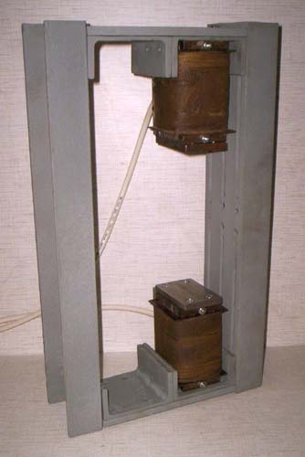
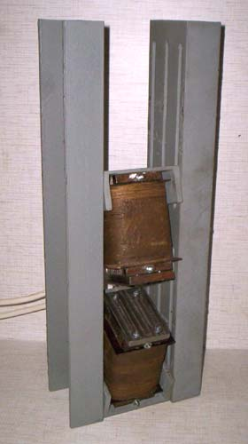
Назначение
Универсальный двухкатушечный электромагнит изменяемой
конфигурации (электромагнит [12])
предназначен для генерации постоянных, переменных или импульсных магнитных полей
с различным весьма произвольным распределением в пространстве.
Генерируемое магнитное поле может быть достаточно однородным или специально
неоднородным. Электромагнит может использоваться для построения установок
импульсного намагничивания постоянных магнитов [10]
или устройств для намагничивания постоянным магнитным полем, установок
размагничивания постоянных магнитов и стали переменным полем
[10,
11], магнитных дефектоскопов, а также
исследовательских установок, работа которых основана на использовании магнитных
полей, в комплекте с однополярным или биполярным импульсным генератором [3, 4],
емкостным накопителем энергии [5] или другими источниками питания
[1, 7, 8]. С его помощью можно намагничивать
постоянные магниты из магнитной стали, ални (алнико) и ферритовые постоянные
магниты по отдельности или в составе деталей и узлов. Может использоваться как
замена намагничивающих аппаратов типа НА-5ВИМ [2, 9].
Технические данные:
- Генерируемое
магнитное поле постоянное, переменное или импульсное
-
Конфигурация генерируемого магнитного поля произвольная, зависит от
взаимного расположения катушек электромагнита
- Питающий ток
постоянный, переменный или импульсный
- Форма импульса
тока произвольная (как правило, синусоидальная или с экспоненциальным
нарастанием и затуханием)
-
Подключение катушек электромагнита к источнику питания, как правило,
последовательное, в некоторых случаях, когда источник питания имеет запас по
току (мощности), для увеличения максимально достижимой индукции
магнитного поля может использоваться параллельное подключение катушек
- Активное
сопротивление отдельной катушки примерно 0.5 Ом, соответственно, активное
сопротивление электромагнита при последовательном включении катушек 1 Ом,
при параллельном – 0.25 Ома
- Индуктивность
отдельной катушки
примерно 10
мГн (на частоте 1000 Гц)
-
Индуктивность двух последовательно соединенных катушек, установленных соосно
друг напротив друга между двумя основаниями-магнитопроводами (рис. 7) при
нулевом зазоре между полюсными наконечниками 25 мГн (на частоте 1000 Гц)
- Индукция
постоянного магнитного поля на торце сердечника отдельно расположенной
катушки (без полюсного наконечника) не менее 0.06 ... 0.1 Тл, на торце
полюсного наконечника 0.05 ... 0.1 Тл при величине тока не более 20 А
(питание параллельно соединенных катушек от источника постоянного напряжения
12 В - автомобильного аккумулятора)
- Индукция
переменного магнитного поля на торце сердечника отдельно расположенной
катушки (без полюсного наконечника) не менее 0.06 ... 0.1 Тл, на торце
полюсного наконечника 0.05 ... 0.1 Тл при величине тока не более 25 А
(питание последовательно соединенных катушек от источника переменного
напряжения 220 В 50 Гц)
- Амплитуда индукции импульсного магнитного поля на торце
сердечника отдельно расположенной катушки (без полюсного наконечника) не
менее 0.5 Тл, на торце полюсного наконечника 0.3 Тл при амплитуде импульса
тока не более 200 А (питание последовательно соединенных катушек от
емкостного накопителя энергии 1 кДж 500 В [5])
- Амплитуда индукции импульсного магнитного поля в центре
зазора 30 мм между катушками без полюсных наконечников, установленных соосно
друг напротив друга между двумя основаниями-магнитопроводами (рис. 7), не
менее 0.9 Тл при амплитуде импульса тока не более 200 А (питание
последовательно соединенных катушек от емкостного накопителя энергии 1 кДж
500 В [5])
- Амплитуда индукции импульсного магнитного поля в центре
зазора 30 мм между полюсными наконечниками катушек, установленных соосно
друг напротив друга между двумя основаниями-магнитопроводами (рис. 7), не
менее 0.6 Тл при амплитуде импульса тока не более 200 А (питание
последовательно соединенных катушек от емкостного накопителя энергии 1 кДж
500 В [5])
- Длительность импульса тока при питании от емкостного
накопителя энергии 1 кДж 500 В
[5] примерно 60 мс,
длительность фронта импульса примерно 15 мс (рис. 12)
- Максимально допустимая амплитуда импульса тока 500 А
-
Максимальная длительность питающего тока величиной 200 А не более 2.5 с
- Средняя потребляемая мощность при питании последовательно
соединенных катушек импульсами тока амплитудой 200 А и частотой 0.01 Гц не
превышает 200 Вт
- Готовность к работе - сразу после включения
-
Электромагнит сохраняет свои технические характеристики в продолжение
следования 100 импульсов тока амплитудой до 200 А длительностью до 100 мс и
частотой 0.01 Гц
- Габаритные
размеры электромагнита зависят от конфигурации и не превышают 520 х 300 х
150 мм3 (без кабелей подключения).
- Масса электромагнита в полной комплектации не более 25 кг
Конструкция электромагнита
Электромагнит состоит из двух катушек с сердечниками,
набранными их стальных пластин, и полюсными наконечниками (рис. 1 - 4). Катушки
электромагнита с использованием дополнительных деталей (пластин и стоек) могут
различными способами крепиться к основаниям электромагнита - стальным швеллерам,
выполняющим роль магнитопроводов (рис. 6 - 8). Блок разъемов для подключения
катушек электромагнита (рис. 5) обеспечивает последовательное включение обмоток
катушек с противоположным направлением тока. Катушка, подключенная к разъему
"ПРЯМАЯ ПОЛЯРНОСТЬ", генерирует магнитное поле, направление которого совпадает с
направлением стрелки, изображенной на катушке (рис. 4). Катушка, подключенная к
разъему "ОБРАТНАЯ ПОЛЯРНОСТЬ", генерирует магнитное поле, направление которого
противоположно направлению стрелки, изображенной на катушке. Таким
образом, поля, создаваемые катушками электромагнита, подключенными к блоку
разъемов, складываются между собой в соответствии с принципом суперпозиции
[6].
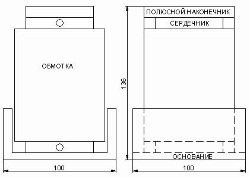
Рис. 1. Катушка электромагнита (эскиз).
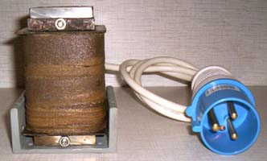
Рис. 2. Катушка электромагнита (вид спереди).
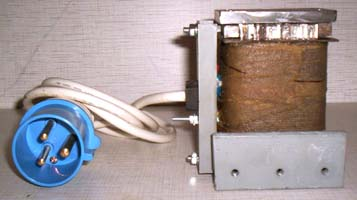
Рис. 3. Катушка электромагнита (вид сбоку).
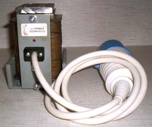
Рис. 4. Катушка электромагнита (вид сзади).
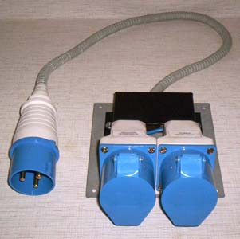
Рис. 5. Блок разъемов для подключения катушек электромагнита.
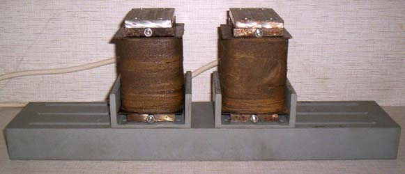
Рис. 6. Параллельное расположение катушек электромагнита на
одном основании.
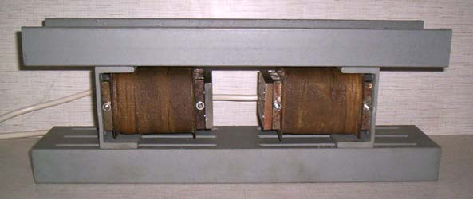
Рис. 7. Расположение катушек электромагнита соосно друг
напротив друга между двумя основаниями.
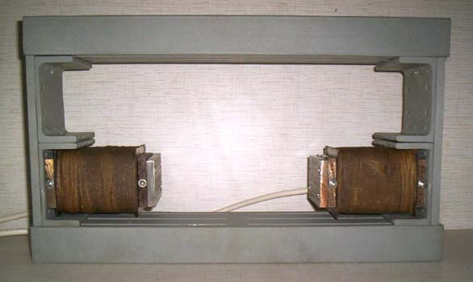
Рис. 8. Расположение катушек электромагнита соосно друг
напротив друга между двумя основаниями с дополнительными стойками и крепежными
пластинами.
На рис. 9 - 11 показан внешний вид установок для генерации
импульсного магнитного поля с различными импульсными генераторами.
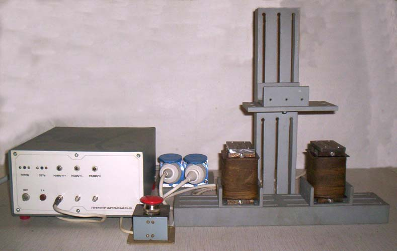
Рис. 9. Установка для генерации импульсных магнитных полей и
переменных магнитных полей с затухающей амплитудой в комплекте с генератором
мощных импульсов тока биполярным [3].
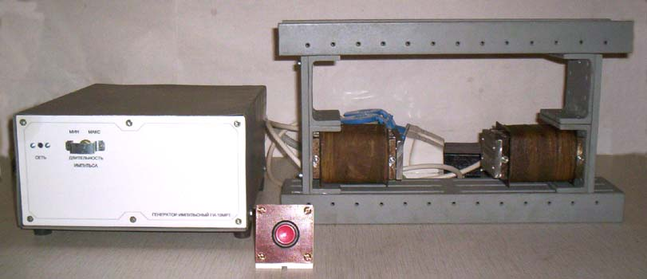
Рис. 10. Установка для генерации импульсных магнитных полей в
комплекте с генератором мощных импульсов тока однополярным [4].
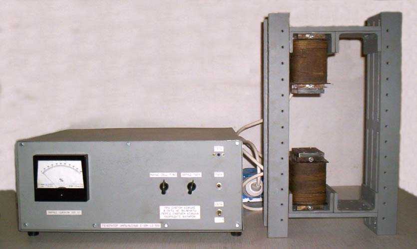
Рис. 11. Установка для генерации импульсных магнитных полей в
комплекте с емкостным накопителем энергии 1 кДж 500 В
[5].
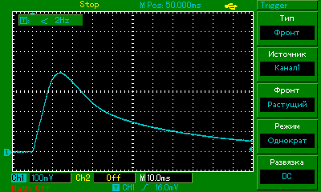
Рис. 12. Форма импульса магнитной индукции при питании
электромагнита от емкостного накопителя энергии 1 кДж 500 В [5]:
длительность фронта примерно 15 мс, длительность импульса примерно 60 мс.
Ссылки:
- Блок питания электромагнита
регулируемый
- Воробьев Л. Н., Гараканидзе К. А. Ремонт мелиоративных и
строительных машин. М., Колос, 1971. 400 с. с илл.
- Генератор мощных
импульсов тока биполярный
- Генератор мощных
импульсов тока однополярный
- Генератор мощных импульсов
тока (емкостной накопитель энергии)
- Законы и уравнения
магнитного поля
- Импульсный
регулируемый блок питания 0 ... -50 В с максимальным выходным током до 20 А
и двухканальным внешним управлением
- Однофазный
тринисторный регулятор мощности в активно-индуктивной нагрузке
- Справочник автомобильного механика. Л. Л. Афанасьев, В.
А. Иларионов, Н. Э. Струве и К. С. Шестопалов. Изд. 4-е. М., Машиностроение,
1969, 688 стр.
- Установки
импульсного намагничивания и размагничивания постоянных магнитов
- Установки и
устройства для размагничивания стали
-
Электромагниты. Источники питания электромагнитов
Словарь
терминов:
- Ални, альни (англ. Alni) - магнитотвердый сплав
алюминия, никеля и железа, получаемый методами литья или порошковой
металлургии. Свойства и обозначение зависят от соотношения элементов и
способа получения. Применяется для изготовления постоянных магнитов. См.
также ЮНД, ЮНДК.
- Алнико, альнико (англ. Alnico) - магнитотвердый
сплав алюминия, никеля, кобальта и железа, получаемый методами литья или
порошковой металлургии. Свойства и обозначение зависят от соотношения
элементов и способа получения. Применяется для изготовления постоянных
магнитов. См. также ЮНД, ЮНДК.
- Генератор импульсов - прибор или устройство для
создания последовательности импульсов.
- Импульсный генератор - генератор
импульсов напряжения или тока.
- Магнитная индукция - вектор, численно
равный пределу отношения силы, действующей со стороны магнитного поля на
элемент проводника с электрическим током, к произведению тока и длины
элемента проводника, если длина этого элемента стремится к нулю, а элемент
так расположен в поле, что этот предел имеет наибольшее значение, и
направленный перпендикулярно к направлению элемента проводника и к
направлению силы, действующей на этот элемент со стороны магнитного поля,
причем из его конца вращение по кратчайшему расстоянию от направления силы к
направлению тока в элементе проводника должно быть видно происходящим против
часовой стрелки.
- Магнитное поле - разновидность
электромагнитного поля, создаваемая движущимися электрическими зарядами или
токами и оказывающая силовое воздействие на движущиеся электрические заряды
или токи.
- Намагничивание
- воздействие на образец магнитным полем, вследствие которого у образца
появляется отличная от нуля остаточная намагниченность.
- Постоянный магнит - объект, создающий
магнитное поле за счет собственных внутренних элементарных электрических
токов, текущих без использования внешнего источника энергии в составляющем
объект материале.
- Размагничивание - процедура, позволяющая
уменьшить остаточную намагниченность образца до таких значений, когда ею
можно пренебречь.
- Феррит бария - магнитотвердый материал
на основе окислов железа и бария состава BaO·6Fe2O3. В
обозначении марки (например, 19БА190) первое число (19) обозначает
энергетическое произведение (в кА·Тл/м), первая буква - состав феррита (Б -
бариевый), вторая буква - свойства (А - анизотропный, И - изотропный),
второе число (190) - коэрцитивную силу по намагниченности (в кА/м).
- Феррит стронция - магнитотвердый
материал на основе окислов железа и стронция состава SrO·6Fe2O3.
В обозначении марки (например, 28СА250) первое число (28) обозначает
энергетическое произведение (в кА·Тл/м), первая буква - состав феррита (С -
стронциевый), вторая буква - свойства (А - анизотропный, И - изотропный),
второе число (250) - коэрцитивную силу по намагниченности (в кА/м).
- Электромагнит - устройство, содержащее
катушку индуктивности и магнитный контур (цепь).
08.11.2016
22.06.2018
Альтернативные источники
энергии
Компьютеры и
Интернет
Магнитные поля
Механотронные системы
Перспективные
разработки
Электроника и
технология
Главная страница